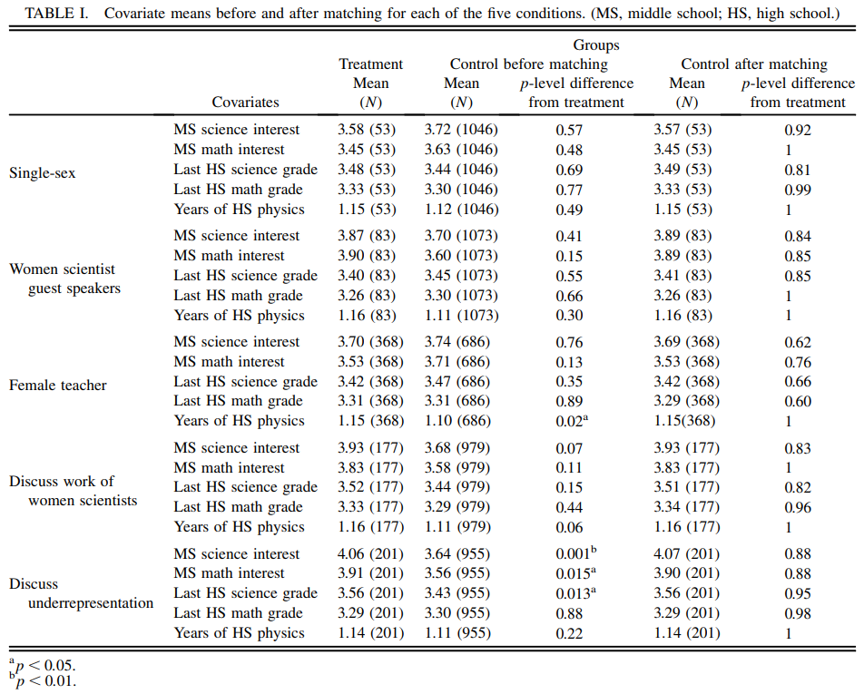
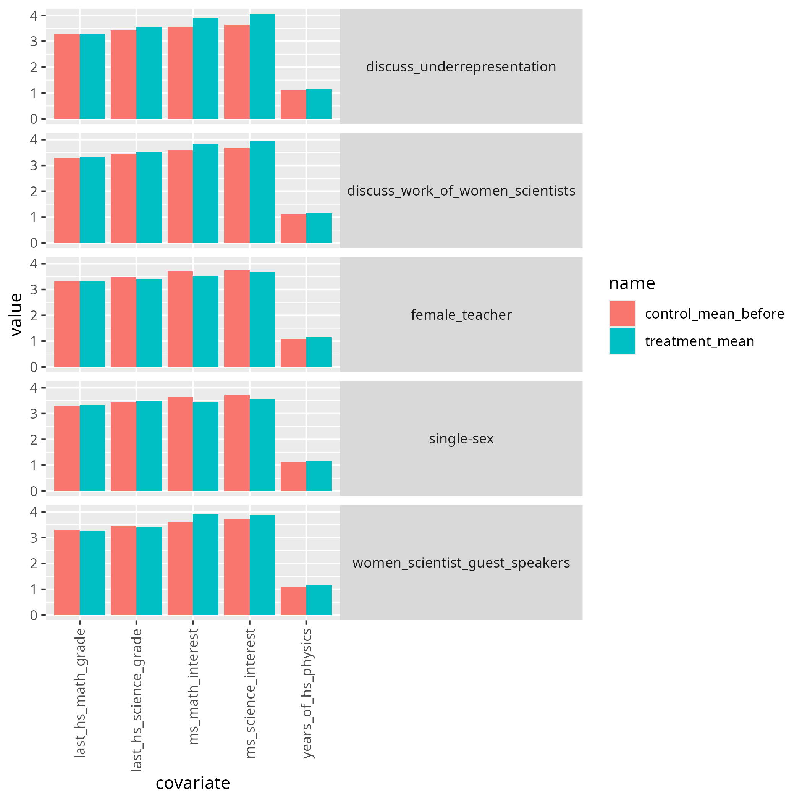
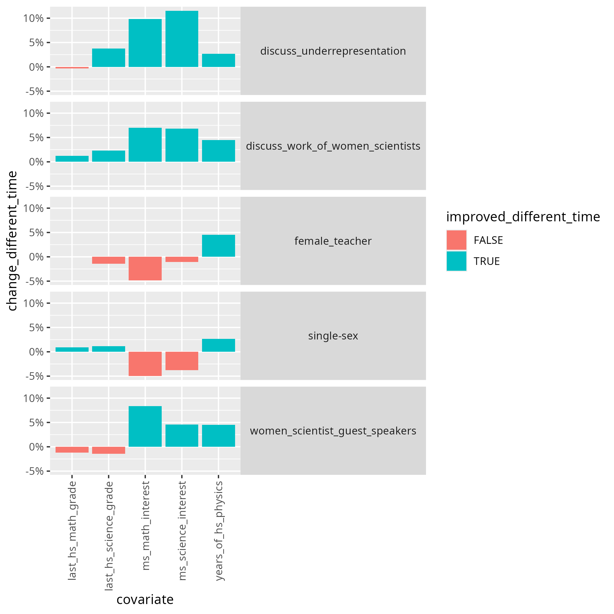
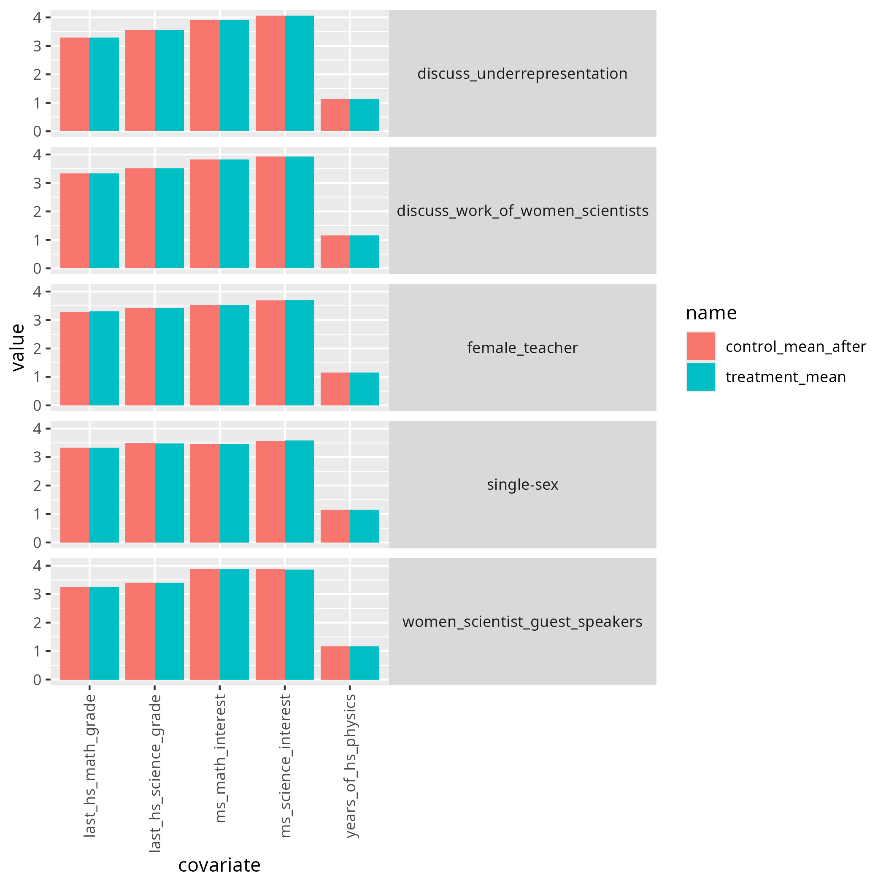
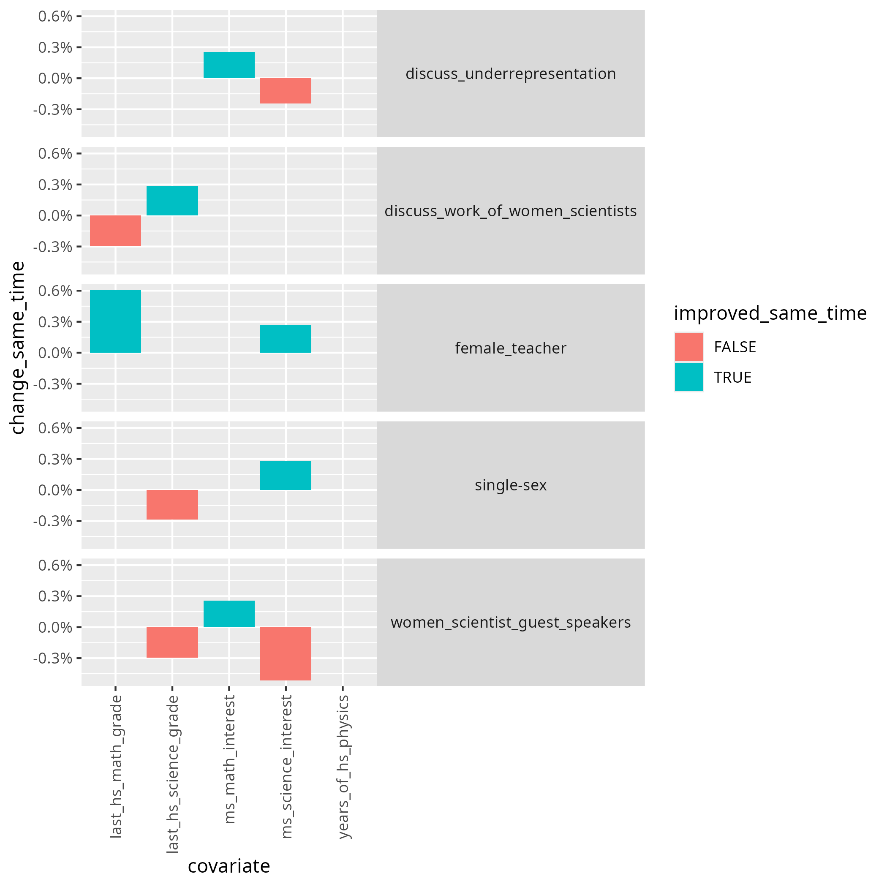
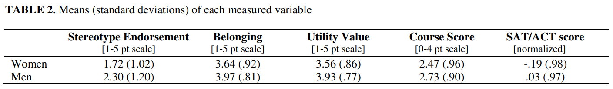
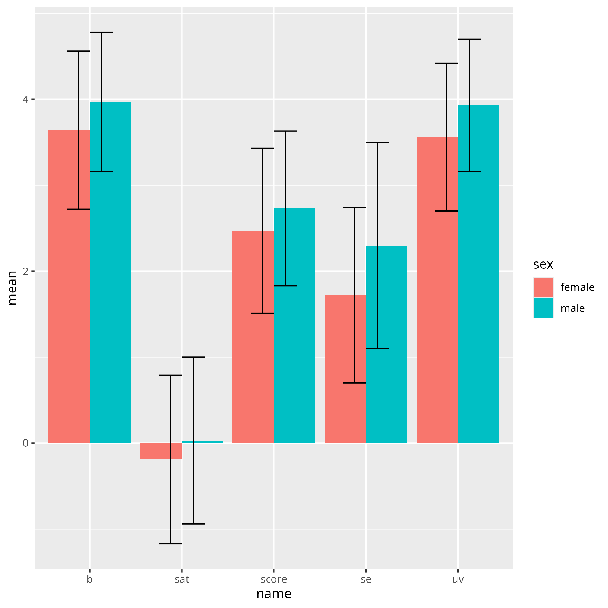
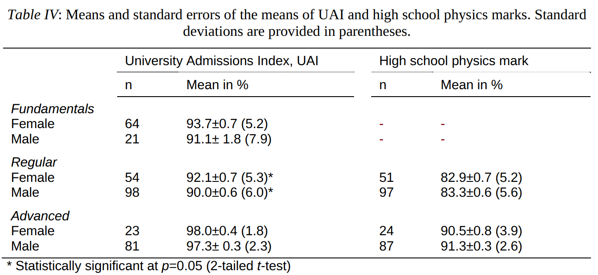

2025-10-30¶
- Date: 2025-10-30
- Lead discussion: Kristen Schröder
- Paper: Johnson, Angela.
"How to design research-aligned DEI interventions in physics."
arXiv preprint arXiv:2406.01390 (2024)
https://arxiv.org/abs/2406.01390
Notes¶
Questions¶
- Q: What grade on a scale from 1 (worst) to 10 (best) would you give this paper?
My answer
2
Answers from the group
These are the answers from the group, which includes me.
8, 8, 10, 2, 3
Answer:
- Q: How would you praise the paper?
My answer
I am happy the author seems to care about minorities and tries to recommend an evidence-based approach.
- Q: How would you criticise the paper?
My answer
I am sorry for all people that care about DEI
that misleading papers such as this one exist.
It makes people honestly researching DEI look needlessly stupid.
I feel the same of two out of two papers I've taken
a closer look at, which are [Hazari et al., 2013] ([42] in this paper)
and [Stout et al., 2013] ([44] in this
paper).
- Q: How would you summarize the paper in one line?
My answer
DEI research is not to be trusted.
- Q: Should we do what is in the paper?
My answer
Absolutely not
- Q: How does this paper make us a better teacher?
My answer
- It shows me again that we should never trust a paper at face value
- DEI interventions have no effect
[Hazari et al., 2013][42], however, that paper presents a wrong analysis that makes it appear they do - There is no relevant gender gap in physicals: the variation between
the two genders is much bigger than the difference in mean:
we should focus on improving the measured variables for everyone,
instead of for one gender. Also here, this conclusion is
drawn from
[44][Stout et al, 2013], however, that paper misinterprets its data
My questions¶
- Equity: equal opportunities, e.g. providing hearing aids for the deaf.
Extent of the problem¶
I hope this paper will show how big the problem is that is solved.
The paper seems ambitious by also stating that it looks for evidence.
How do the listed DEI interventions improve DEI?¶
What are these 4 DEI interventions?
- Light touch DEI intervention
- DEI training: workshops
- DEI unit
- DEI semester-long theme
Here is my initial guess:
| Intervention | Effect of diversity? | Effect on equity? | Effect on inclusion? |
|---|---|---|---|
| Light touch DEI intervention | ?No | ?No | ?Yes, but weird |
| DEI training: workshops | ?No | ?No | ?No |
| DEI unit | ?No | ?No | ?No |
| DEI semester-long theme | ?No | ?No | ?No |
4. Outcomes¶
- A. Reduce implicit bias
- B. Increase participants' awareness of their own biases/the impact of bias on others
- C. Teach participants strategies to overcome bias
- D. Increase opportunities to practice strategies to overcome bias
- E. Increase internal or external motivation to reduce bias
- F. Increase physics identity/intent to pursue a physic major or career
- G. Increase the sense of belonging/decrease the sense of isolation of physics students who are members of minoritized groups
I think F is most important for this paper. I hope to read a number about this. However, when I analysed the author addressing this, I am convinced that the outcome is that there is no difference, i.e. each of the DEI interventions have had no relevant outcome.
With F concluded to be irrelevant, I am most interested in G. Let's take a look at that.
4.A Implicit bias¶
A. Reduce implicit bias While some interventions have been shown to reduce participants' implicit biases (as measured on the Implicit Association Test, for example), these changes do not lead to changes in either explicit bias or behavior. Thus, I do not recommend reduction of implicit bias as an outcome goal unless it is accompanied with other goals; perhaps not even then, as it is not clear that implicit bias is in fact a measure of participants' animus to other groups. There is reason to think it might be a measure instead of the cultural norms of their environment.
I think this is a good idea, to not care about implicit bias tests: out of curiosity, I've taken one. This is my result:
You were slightly faster at sorting 'Fat people' with 'Bad words' and 'Thin people' with 'Good words' than 'Thin people' with 'Bad words' and 'Fat people' with 'Good words'
This results does not give me any info. I felt the test was rigged.
4.F. Increase physics identity/intent to pursue a physic major or career¶
The paper refers to [Hazari et al., 2013][42],
where they analyses the effect of these DEI interventions:
- (i) having a single-sex physics class
- (ii) having female scientist guest speakers,
- (iii) having a female physics teacher,
- (iv) discussing the work of female scientists
- (v) discussing the underrepresentation of women
Table 1 from [Hazari et al., 2013][42] contains the results.
How does that table look like?

As the data was not available ( :-/ ), I created a comma-separated from it manually. I am happy the values for the control group before and after the experiment were reported: the world may change during the experiment.
I decided to take a look at the results visually, following the line of reasoning of the paper:

I also wanted to see the improvements, similar to the paper,
using (new - old) / old = (treatment - control) / control =,
resulting in the same reported values:

However, one thing that was weird to me, is that they compare groups taken at different points in time: the treatment group was measured after the treatment, where the control group used was the one before the treatment.
I decided to compare with the control group after the treatment:

Here I see no difference. Let's plot the differences:

I conclude that [Hazari et al., 2013][42] is misleading
and proves that there is no relevant effect.
Back to the original paper, its author writes:
First, it is indeed possible to increase girls' and women's interest in physics, and second, several of the common-sense ways people hope to do this are not well-supported by research;
I conclude that the author is successfully mislead.
4.G. Increase the sense of belonging/decrease the sense of isolation of physics students who are members of minoritized groups¶
Here no qualitative research regarding physics is supplied.
Let's take a look at the author's more general statements, that should convince me of the importance of belonging:
This outcome is particularly salient to physics communities, as there is evidence that
1) a sense of belonging is associated with success in STEM
[43, Good, 2012, #903]and physics[44, 45], and 2) members of minoritized groups often experience a lower sense of belonging than other students in STEM[46, Good, 2012 #903]and physics[8, 44, 47-49]. There is also evidence that women of color in physics sometimes experience intense isolation[50, 51.]
I think point 2 is is uninteresting: I am unsurprised any minority group
has a lower sense of belonging. Question is: do these feelings have an effect?
I will take a look at paper [44][Stout et al, 2013]
to see how much this influences success.
The author of this paper claims 'a sense of belonging is associated with
success in physics'.
The title of [44][Stout et al, 2013] ('How a gender gap in belonging
contributes to the gender gap in physics participation') is about participation.
Let's see how we can unite these different words.
The numbers we need are in [44][Stout et al, 2013] table 2.
How does that table look like?

When I convert these number to a comma-separated file by hand, I see this:

Visualization of
[44][Stout et al, 2013]table 2, with the abbreviations below. Error bars show the standard deviation.
| Abbreviation | Full |
|---|---|
se |
Stereotype Endorsement |
b |
Belonging |
uv |
Utility Value |
score |
Course Score |
sat |
SAT/ACT score |
The se is the most interesting here, which is 'Stereotype Endorsement'
The question surveyed was: 'According to my own personal beliefs,
I expect men to generally do better in physics than women'.
This has nothing to do with 'success in physics': success in physics
would be a course or a SAT score. For these values, there is not a big
difference!
I conclude that the author is misleading the reader here.
Also I conclude the author has omitted counterindications.
A simple search on Google Scholar for
'gender confidence in predicted academic success per field'
gave [Sharma and Bewes, 2011] as a second hit.
It shows that admission rates and grades are equal:

I would assume that the author of this paper is aware of this paper, hence I conclude the author has decided to paint a biased picture.
References¶
-
[Hazari et al., 2013][42]Z. Hazari, G. Potvin, R. M. Lock, F. Lung, G. Sonnert and P. M. Sadler, “Factors that Affect the Physical Science Career Interest of Female Students: Testing Five Common Hypotheses,” Physical Review Special Topics - Physics Education Research 9 (2), 020115 (2013). -
[Johnson, 2024]Johnson, Angela. "How to design research-aligned DEI interventions in physics." arXiv preprint arXiv:2406.01390 (2024)https://arxiv.org/abs/2406.01390 -
[Schipull, 2019][7]E. M. Schipull, X. R. Quichocho and E. W. Close, ““Success Together”: Physics departmental practices supporting LGBTQ+ women and women of color,” Proceedings of the Physics Education Research Conference, 535-540 (2019). -
[Stout et al, 2013]Stout, Jane G., et al. "How a gender gap in belonging contributes to the gender gap in physics participation." AIP conference proceedings. Vol. 1513. No. 1. American Institute of Physics, 2013. -
[Sharma and Bewes, 2011]Sharma, Manjula Devi, and James Bewes. "Self-monitoring: Confidence, academic achievement and gender differences in physics." Journal of Learning Design 4.3 (2011): 1-13.